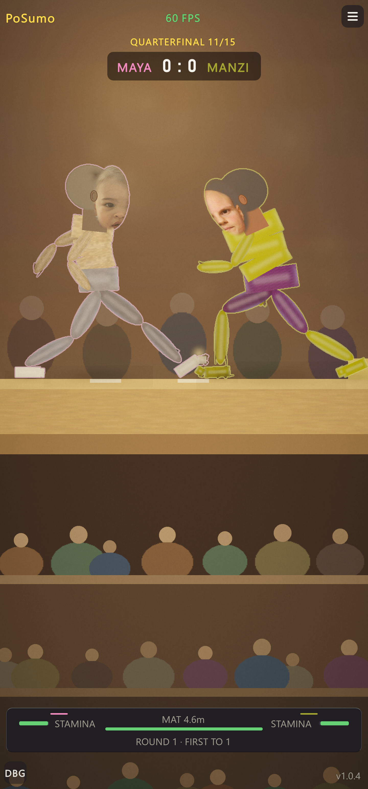
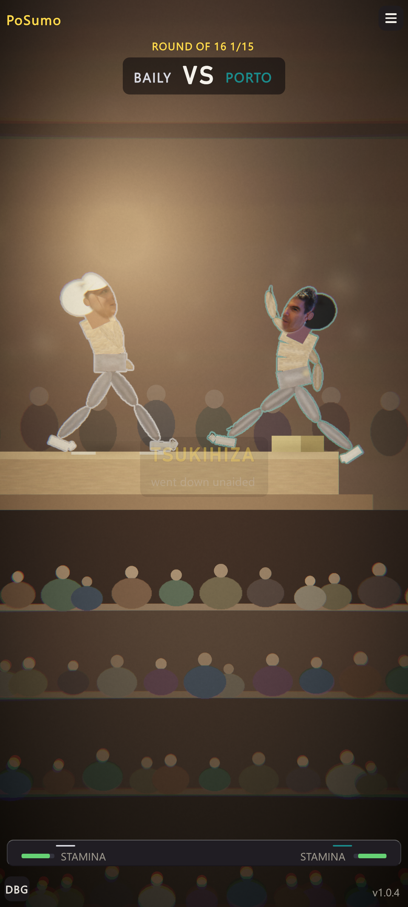
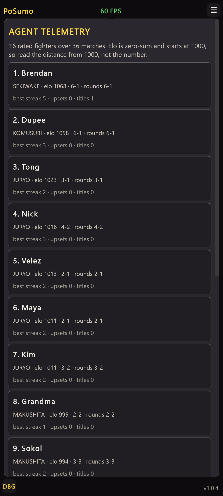
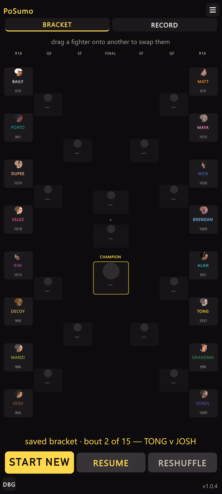

Arena HUD — clean pass
2026-11-10 · 1080×2400 portrait · presentation only, no brain touched. The two "before" and "after" captures are different bouts; compare the HUD, not the fighters.


What changed
- Removed “60 FPS” from top-centre during play. Moved: it appears only while the DBG panel is open (below).
- Removed “0 : 0” from the scorebug in a one-point match. Now “BAILY VS PORTO”; the digits return if
pointsToWinis ever above 1. - Removed the MAT 4.6m meter. The ring no longer shrinks, so it was a constant full bar. It returns automatically if
shrinkStartSecondsis set above 0. - Removed “ROUND 1 · FIRST TO 1”. It could only ever say one thing. It returns automatically if
pointsToWinis above 1. - Result: the bottom panel is one row, two stamina bars mirrored about the centre.
Frame rate, now inside DBG


Checks
- Compiles clean; no new console errors.
portrait_check.pyat 1080×2400: 0 overflow, corner or notch findings.